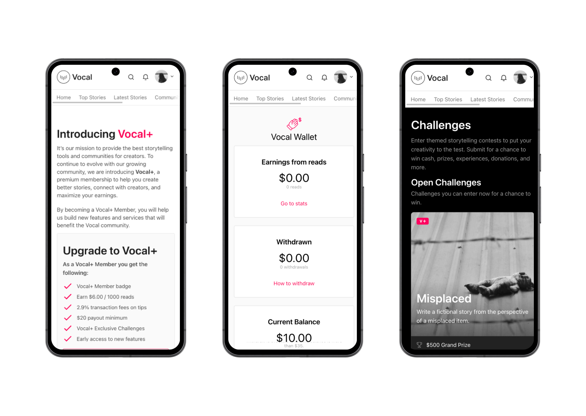
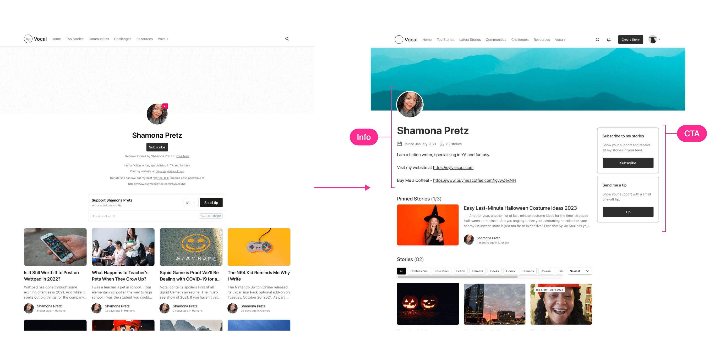

Connecting writers with their readers
Role
In 2022, I worked with Vocal as a product designer at Thinkmill to address the challenge of reducing churn rates from their monthly premium subscription, Vocal+. The team consisted of a design lead, two product designers (including myself), two engineers and a product manager.
Problem
Vocal, a platform empowering writers to focus on their craft, faced a significant hurdle: it was difficult to grow readership. Some users reported canceling their subscriptions when their earnings from reads didn't cover the cost of subscription to Vocal+. Our goal was to enhance engagement and build a thriving community for both readers and writers.
Hypothesis
Drawing insights from user-submitted reviews and online forums, we hypothesized that fostering a strong sense of community and facilitating ongoing interaction between users would increase engagement and attract more readers. Additionally, we believed that enabling readers to tip creators on an ongoing basis would lead to higher retention rates among Vocal+ writers by allowing better predictions of expected earnings.
Method
We conducted a comprehensive survey of 3,000 Vocal users to measure attitudes towards receiving ongoing tips from readers.
Subsequently, we organized focus group sessions with participants from US, UK, Australia and New Zealand. During these sessions, we tested ideas that centered around increasing connection with readers and building a community around content.
Challenge
One of the main challenges was the limited representation of dedicated Vocal readers in our survey sample. However, we mitigated this by leveraging insights from creators and focusing on ways to enhance reader engagement through the guidance of Vocal creators.
Solutions
Ongoing subscriptions
While the ability to tip was already supported on Vocal, we encouraged users to further show support to their favorite creators through an ongoing contribution called Pledge.
Updated Profile
We revamped the profile and story layout to serve as more than just a platform for sharing stories. Writers often use Vocal as a portfolio to showcase their work, so I optimized the layout for readability and consistency with the Vocal Design System.
Reader insights
Recognizing the desire for feedback on writing, we introduced features to provide insightful feedback to creators, regardless of their experience level, helping them improve their craft.
Mobile app for readers
To enhance the reading experience and further promote community engagement, we developed a dedicated mobile app tailored to the needs of readers. .
Impact
Following the implementation of these solutions, Vocal experienced a notable increase in user engagement. Specifically, we observed over 60,000 comments being exchanged in the first month, indicating the effectiveness of our approach in fostering a stronger sense of community on the platform.